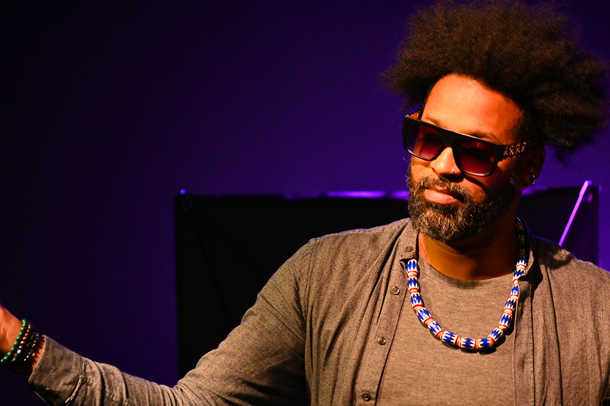

<!doctype html>
<html lang="fr">
<head>
<meta charset="utf-8">
<title>Conférence gesticulée sur la masculinité | Pascal Antonio</title>
<meta name="viewport" content="width=device-width,initial-scale=1">
<meta name="description" content="Pascal Antonio anime des conférences gesticulées sur la masculinité, le patriarcat et l'égalité femmes-hommes. Réservez une intervention pour votre structure.">
<meta name="author" content="Pascal Antonio">
<meta name="robots" content="index, follow">
<meta name="theme-color" content="#EE3A7A">
<link rel="canonical" href="https://floreasy.github.io/">
<meta property="og:type" content="website">
<meta property="og:site_name" content="Pascal Antonio">
<meta property="og:locale" content="fr_FR">
<meta property="og:title" content="Conférence gesticulée sur la masculinité | Pascal Antonio">
<meta property="og:description" content="Conférences gesticulées sur la masculinité, le patriarcat et l'égalité femmes-hommes. Réservez une intervention pour votre école, entreprise ou association.">
<meta property="og:url" content="https://floreasy.github.io/">
<meta property="og:image" content="https://floreasy.github.io/assets/home-1.jpg">
<meta property="og:image:width" content="1920">
<meta property="og:image:height" content="1080">
<meta property="og:image:alt" content="Pascal Antonio en conférence gesticulée">
<meta name="twitter:card" content="summary_large_image">
<meta name="twitter:title" content="Conférence gesticulée sur la masculinité | Pascal Antonio">
<meta name="twitter:description" content="Conférences gesticulées sur la masculinité, le patriarcat et l'égalité femmes-hommes. Réservez une intervention pour votre structure.">
<meta name="twitter:image" content="https://floreasy.github.io/assets/home-1.jpg">
<script type="application/ld+json">
{"@context":"https://schema.org","@type":"Person","@id":"https://floreasy.github.io/#pascal","name":"Pascal Antonio","url":"https://floreasy.github.io/","image":"https://floreasy.github.io/assets/home-1.jpg","jobTitle":"Conférencier gesticulant et formateur en éducation populaire","description":"Conférencier et formateur spécialisé dans la masculinité, le patriarcat, les stéréotypes de genre et l'égalité femmes-hommes.","sameAs":["https://www.instagram.com/antonio_pascal/","https://www.youtube.com/watch?v=M0SiVachnZI"],"knowsAbout":["Conférence gesticulée","Masculinité","Patriarcat","Stéréotypes de genre","Égalité femmes-hommes","Éducation populaire","Intersectionnalité"]}
</script>
<script type="application/ld+json">
{"@context":"https://schema.org","@type":"WebSite","@id":"https://floreasy.github.io/#website","url":"https://floreasy.github.io/","name":"Pascal Antonio","inLanguage":"fr-FR","publisher":{"@id":"https://floreasy.github.io/#pascal"}}
</script>
<link rel="preconnect" href="https://fonts.googleapis.com">
<link rel="preconnect" href="https://fonts.gstatic.com" crossorigin>
<link href="https://fonts.googleapis.com/css2?family=Archivo+Black&family=Anton&family=Bebas+Neue&family=Oswald:wght@400;700&family=Bricolage+Grotesque:wght@400;700&family=Instrument+Serif:ital@0;1&family=DM+Serif+Display:ital@0;1&family=Playfair+Display:ital,wght@0,400;1,400&family=Cormorant+Garamond:ital,wght@0,400;1,400&family=Inter+Tight:wght@400;500;600&display=swap" rel="stylesheet">
<link rel="stylesheet" href="shared.css">
</head>
<body class="theme-paper">
  <div id="root"></div>

  <script src="https://unpkg.com/react@18.3.1/umd/react.development.js" integrity="sha384-hD6/rw4ppMLGNu3tX5cjIb+uRZ7UkRJ6BPkLpg4hAu/6onKUg4lLsHAs9EBPT82L" crossorigin="anonymous"></script>
  <script src="https://unpkg.com/react-dom@18.3.1/umd/react-dom.development.js" integrity="sha384-u6aeetuaXnQ38mYT8rp6sbXaQe3NL9t+IBXmnYxwkUI2Hw4bsp2Wvmx4yRQF1uAm" crossorigin="anonymous"></script>
  <script src="https://unpkg.com/@babel/standalone@7.29.0/babel.min.js" integrity="sha384-m08KidiNqLdpJqLq95G/LEi8Qvjl/xUYll3QILypMoQ65QorJ9Lvtp2RXYGBFj1y" crossorigin="anonymous"></script>

  <script type="text/babel" src="tweaks-panel.jsx"></script>
  <script type="text/babel" src="tweaks.jsx"></script>
  <script type="text/babel" src="shared.jsx"></script>

  <script type="text/babel">
    function HomePage() {
      useCurtainTransitions("var(--pink)");
      useReveal();
      const [t, setT] = React.useState(0);
      React.useEffect(() => {
        const id = setInterval(() => setT(x => (x + 1) % 4), 2400);
        return () => clearInterval(id);
      }, []);

      const rotators = ["DU MÂLE-ALPHA", "DE LA VIRILITÉ", "DU PATRIARCAT", "DE LA DOMINATION"];

      return (
        <>
          <SiteHeader active="home" />

          {/* HERO */}
          <section style={{ background: "var(--pink)", padding: "60px 32px 64px", borderBottom: "1.5px solid var(--ink)" }}>
            <div style={{ maxWidth: "var(--maxw)", margin: "0 auto" }}>
              <div className="eyebrow">Conférence gesticulée — depuis 2025</div>
              <h1 className="h-display" style={{ marginBottom: 24 }}>
                L'IMPOSTURE<br/>
                <span style={{
                  display: "inline-block",
                  width: "max-content",
                  maxWidth: "100%",
                  background: "var(--yellow)",
                  padding: "0 .15em",
                  fontStyle: "italic",
                  fontFamily: "var(--font-serif)",
                  letterSpacing: "normal",
                  textTransform: "none",
                  fontSize: ".75em",
                  whiteSpace: "nowrap",
                  boxDecorationBreak: "clone",
                  WebkitBoxDecorationBreak: "clone",
                }}>
                  {rotators[t]}
                </span>
              </h1>
              <div style={{ display: "grid", gridTemplateColumns: "1.2fr 1fr", gap: 60, alignItems: "end", marginTop: 60 }}>
                <p className="h-serif" style={{ maxWidth: "22ch" }}>
                  <em>Une prise de parole publique qui porte une dimension politique.</em> Un acte d'éducation populaire — par et avec Pascal Antonio.
                </p>
                <div style={{ display: "flex", flexDirection: "column", gap: 16, alignItems: "flex-start" }}>
                  <a href="contact.html" className="btn">Programmer une intervention <span className="arrow">→</span></a>
                  <a href="https://www.youtube.com/watch?v=M0SiVachnZI" target="_blank" className="btn btn-out">Voir le teaser ↗</a>
                </div>
              </div>
            </div>
          </section>

          {/* QUESTIONS BLOCK */}
          <section className="page reveal">
            <div className="col2">
              <div>
                <div className="eyebrow">Description</div>
                <h2 className="h-section">Comment réussir<br/>à être un Mâle-Alpha ?</h2>
              </div>
              <div className="body-l">
                <p style={{ marginBottom: 20 }}>
                  Question récurrente qui traverse les réflexions de nombreux hommes voulant atteindre la meilleure version d'eux-mêmes.
                </p>
                <p style={{ marginBottom: 20, fontFamily: "var(--font-serif)", fontStyle: "italic", fontSize: "clamp(22px, 2vw, 32px)", lineHeight: 1.2 }}>
                  Une autre question que l'on pourrait se poser, c'est : <strong style={{background:"var(--yellow)", color:"var(--ink)", padding:"0 .12em", fontStyle:"normal", fontFamily:"var(--font-display)"}}>pourquoi doit-on absolument être un mâle-alpha ?</strong> Existe-t-il des hommes bêta, gamma ou epsilon ?
                </p>
                <p>
                  L'imposture du Mâle-Alpha pose ces questions et cherche à savoir quelles sont les conséquences de cette course vers la virilité — pour les femmes, les hommes et pour la société.
                </p>
              </div>
            </div>
          </section>

          {/* TABLE OF CONTENTS */}
          <section className="page reveal">
            <div className="eyebrow">Au programme</div>
            <h2 className="h-section" style={{ marginBottom: 24, fontSize: "clamp(28px, 6vw, 84px)" }}><span style={{ whiteSpace: "nowrap" }}>Une mallette pédagogique</span><br/><span style={{ background: "var(--yellow)" }}>en 3 modules</span></h2>
            <p className="body-l" style={{ marginBottom: 40, maxWidth: "none" }}>
              La conférence gesticulée, <em>l'imposture du mâle-alpha</em>, s'accompagne de 3 ateliers pratiques et dynamiques pour savoir comment déconstruire les stéréotypes de genre.
            </p>
            <nav className="toc">
              {[
                { n: "01", l: "On libère la parole", h: "ateliers.html#atelier-1" },
                { n: "02", l: "Radar intersectionnel", h: "ateliers.html#atelier-2" },
                { n: "03", l: "On passe à l'action", h: "ateliers.html#atelier-3" },
              ].map(it => (
                <a key={it.n} href={it.h}>
                  <span className="num">{it.n}</span>
                  <span className="label">{it.l}</span>
                  <span className="arr">→</span>
                </a>
              ))}
            </nav>
          </section>

          {/* PHOTO STRIP */}
          <section className="page reveal">
            <div style={{ display: "grid", gridTemplateColumns: "2fr 1fr", gap: 16, height: "min(70vh, 700px)" }}>
              <div style={{ overflow: "hidden", border: "1.5px solid var(--ink)" }}>
                
              </div>
              <div style={{ display: "grid", gridTemplateRows: "1fr 1fr", gap: 16 }}>
                <div style={{ overflow: "hidden", border: "1.5px solid var(--ink)" }}>
                  
                </div>
                <div style={{ overflow: "hidden", border: "1.5px solid var(--ink)" }}>
                  
                </div>
              </div>
            </div>
          </section>

          {/* TÉMOIGNAGE — rappel rose */}
          <section className="reveal" style={{ background: "var(--pink)", borderTop: "1.5px solid var(--ink)", borderBottom: "1.5px solid var(--ink)", padding: "80px 32px" }}>
            <div style={{ maxWidth: "var(--maxw)", margin: "0 auto" }}>
              <div className="eyebrow">Témoignage</div>
              <p className="quote">
                "J'ai vraiment beaucoup aimé la conférence gesticulée{" : "}à la fois <span style={{background:"var(--yellow)",fontStyle:"normal",fontFamily:"var(--font-display)",padding:"0 .12em"}}>intime, didactique et pleine d'humour</span>. Une parole, venant d'un homme, très précieuse."
              </p>
            </div>
          </section>

          <SiteFooter />
          <PascalTweaks />
        </>
      );
    }

    ReactDOM.createRoot(document.getElementById("root")).render(<HomePage />);
  </script>
</body>
</html>
